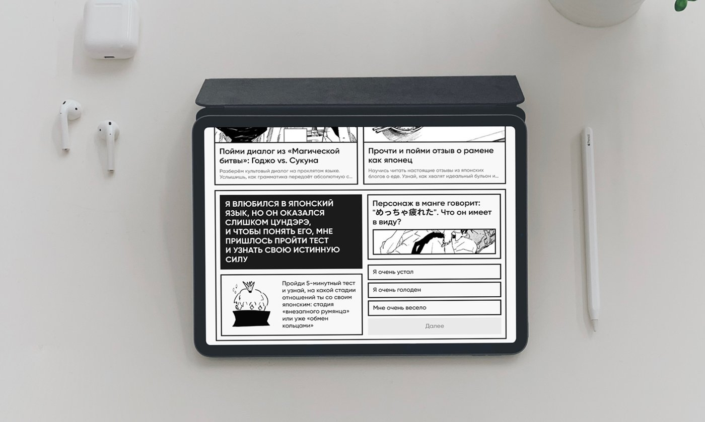
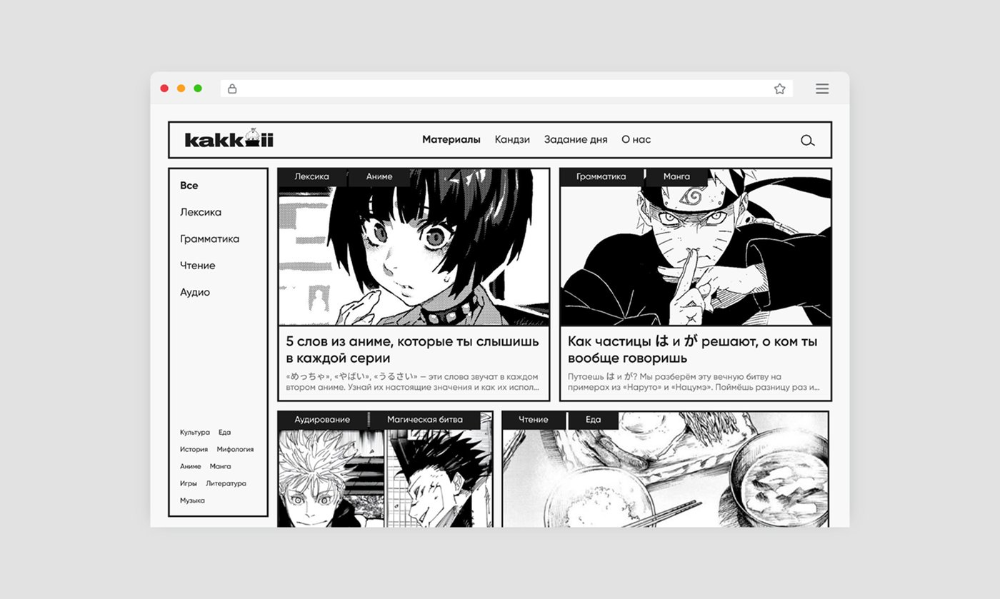
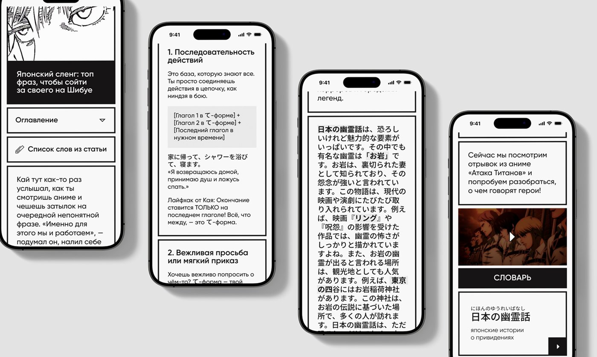
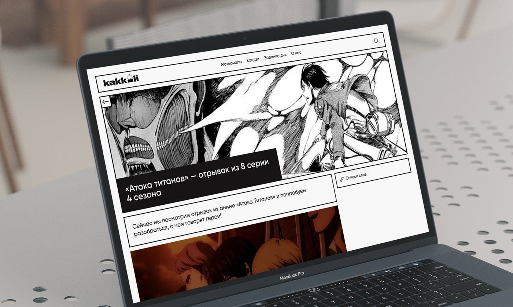
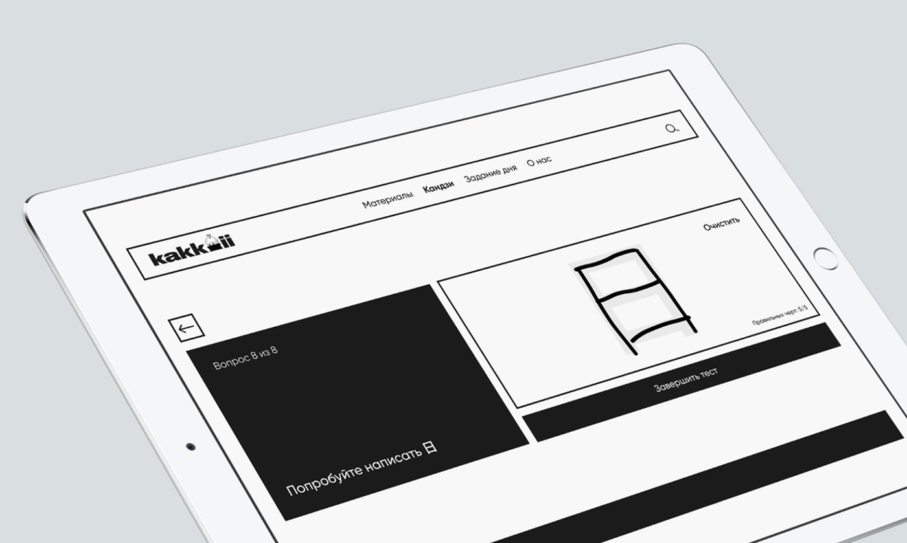

KAKKOII
Онлайн-медиа для изучения японского языка, которое совмещает образовательные статьи с интерактивной практикой — от культуры и сленга из аниме и манги до дизайн-системы, персонажа-проводника и адаптивных экранов для веба, планшетов и мобильных устройств.
Смотреть оригинальный кейс →Контекст проекта
KAKKOII — дипломный проект по направлению «UX/UI и frontend-разработка» в Школе дизайна НИУ ВШЭ (Нижний Новгород). Идея — соединить учебник и живую японскую речь: сленг, мемы и культурные отсылки, которые редко попадают в классическую грамматику.
Продукт задумывался не как ещё один курс с уроками, а как медиа: короткие статьи на основе реальных постов, аниме и манги, а рядом с каждой — практика, которая сразу проверяет понимание.
Существующие сайты предлагают устаревший формат
Отдельные учебники и приложения для изучения языка редко ориентируются на живую речь и актуальные культурные контексты. Разрыв между сухой грамматикой и тем, как язык звучит в аниме, манге и соцсетях, оставался незакрытым.
Совместить статьи с интерактивной практикой
Собрать онлайн-медиа для изучения японского языка, которое опирается на поп-культуру и совмещает статьи с интерактивными тренажёрами: чтением, аудированием, грамматикой и проверкой понимания после каждого материала.
Статьи + разделы платформы
- 01
Материалы
Короткие статьи на основе реальных постов, аниме и манги — с разбором лексики, грамматики и культурного контекста построчно.
- 02
Кандзи
Отдельный тренажёр для запоминания иероглифов через частотность и контекст, а не изолированное заучивание.
- 03
Задание дня
Ежедневная практика — короткое упражнение, которое проверяет усвоенное и мотивирует возвращаться на сайт.
- 04
Проверка понимания
После каждой статьи — вопрос с вариантами ответа по прочитанному или услышанному, чтобы закрепить материал сразу.
かっこいい — «крутой»
Название буквально переводится с японского как «крутой, стильный» — то ощущение, которое должно оставаться после чтения статьи или прохождения упражнения.
Это Кай.. он крут
Виртуальный сэнпай Кай всегда поможет советом и подбодрит. Под маской крутого парня скрывается ранимая душа: снаружи — лёд, внутри — булочка с корицей. «Да, я выгляжу круто. Но моя миссия — сделать крутым тебя.»
Как это выглядит





«Да, я выгляжу круто. Но моя миссия — сделать крутым тебя.»— Кай, талисман KAKKOII
Что получилось в результате
Получилось онлайн-медиа с живой лентой статей, тренажёром кандзи и ежедневными заданиями — вместо очередного курса с уроками получился сайт, который хочется читать. Проект развёрнут и доступен по адресу kakkoii.vercel.app.